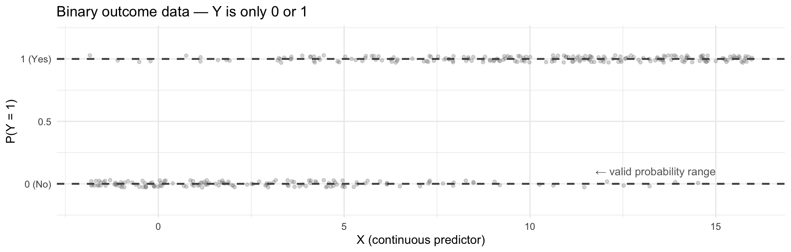
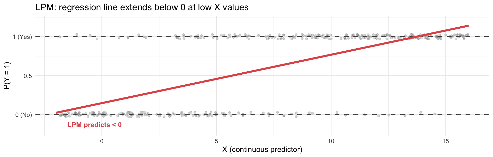
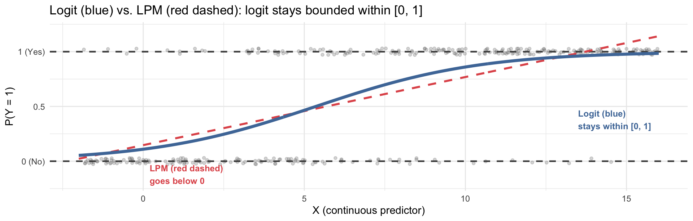
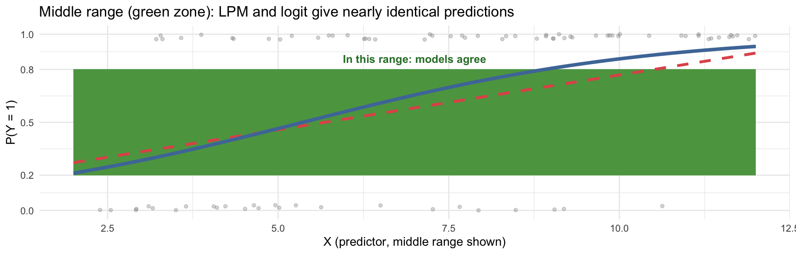
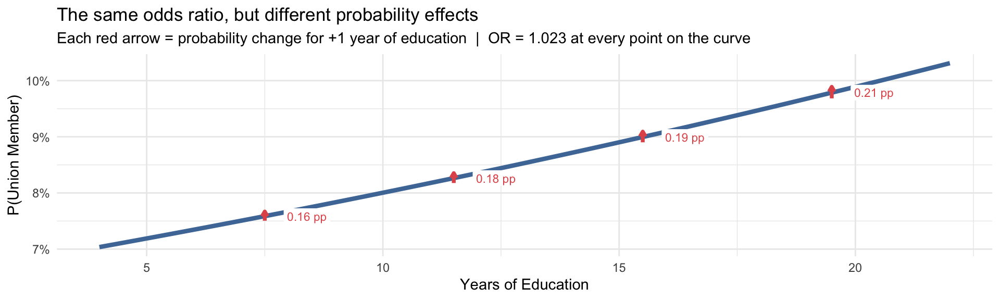
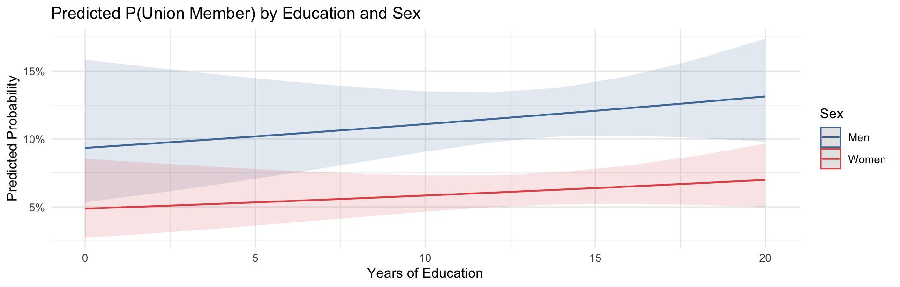

(Intercept) educ
0.06198181 0.00180732 Week 12
Sociology 106: Quantitative Sociological Methods
April 7, 2026
Agenda
Housekeeping:
- HW #9, HW #10, Revised Proposal with Outline
Statistical content — four parts:
- Part 1: Why not OLS? — the limits of linear models for binary outcomes
- Part 2: The logistic regression model — odds, log-odds, and the sigmoid function
- Part 3: Interpreting logistic regression — log-odds, odds ratios, and
modelsummary() - Part 4: Predicted probabilities and margins plots — making results intuitive
Reading discussion:
- Freeman & Braconi (2004) — logistic regression in practice
In-class lab:
- Running and interpreting logistic regression on your research data
Housekeeping
Weekly Assignment #8
- Feedback: Remember if your confidence interval incldues infinitiy (∞) then you probabally forgot to drop NAs fro your analysis
Weekly Assignment #9
- Due Thursday, April 9 — OLS regression from Week 11
- Use
modelsummary()for a clean table; interpret the slope, R², and statistical significance
Weekly Assignment #10
- Due Thursday, April 16
- Run a logistic regression on a binary outcome from your research dataset — today’s lecture covers everything you need
- Report the odds ratio for your key predictor; compute predicted probabilities at two or more values
Revised Proposal with Outline
- Due Thursday, April 16
- Should now describe whether your final analysis uses OLS or logistic regression — and why
Where We Are in the Course
- Week 11: OLS regression — how strong is the linear relationship?
- This week (Week 12): Logistic regression — predicting binary outcomes
- Week 13: Multiple regression extensions — controlling for confounders
The big picture: from “how much?” to “what are the odds?”
Last week, OLS answered: “For every additional unit of X, how much does Y change on average?” That works when Y is continuous. This week, Y is binary (0/1) — and we need a different tool.
Part 1: Why Not OLS?
When the outcome is 0 or 1
Recap: What OLS Does
OLS estimates the expected value of Y as a linear function of X:
\[E[Y \mid x] = \alpha + \beta x\]
When Y is continuous (in attain data: income, prestige, hours worked), this works well:
- \(\beta\) is the change in Y per one-unit increase in X
- Predicted values are on the same continuous scale as Y
- Nothing forces predicted values to stay within any bounds
Now imagine Y is binary
What if Y = 1 (union member) or Y = 0 (not)?
For a binary variable, \(E[Y] = P(Y = 1)\), the probability of the outcome.
A probability must be between 0 and 1. But nothing stops OLS from predicting 1.4 or −0.2.
The Linear Probability Model
When OLS is applied to a binary (0/1) outcome, the result is called a linear probability model (LPM):
\[E[Y \mid x] = P(Y = 1 \mid x) = \alpha + \beta x\]
The coefficient \(\beta\) is interpreted as: a one-unit increase in X is associated with a \(\beta\)-unit change in the probability that Y = 1.
This is appealingly simple and directly interpretable.
Our running example:
- Outcome (Y):
union_member— 1 if respondent (or their spouse) is in a union, 0 otherwise - Key predictor (X):
educ— years of education - Research question: Does educational attainment predict the probability of union membership?
About 8.6% of respondents in our sample are union members.
Interpreting the LPM coefficient
Each additional year of education is associated with a 0.18 percentage point increase in the probability of union membership.
Problems with the LPM
Binary outcomes look like this — the data are 0s and 1s, but the probability of Y = 1 varies smoothly with X:

The dashed lines mark the valid probability range: any model must stay between 0 and 1.
The OLS line ignores the 0–1 constraint — it will extend below 0 and above 1 at extreme values of X:

Two core problems with LPM:
- Predicted probabilities can fall outside [0, 1] — meaningless (you can’t have a −5% chance)
- Constant marginal effects — a one-unit increase in X always changes probability by the same amount, no matter where you are on the scale. But in reality, an extra year of education matters less for someone already near 0% or 100% probability.
A logistic (sigmoid) curve solves both problems — it naturally stays between 0 and 1, and its slope is steepest at intermediate probabilities and flattens near the extremes:

Here’s the key practical insight: when predicted probabilities are between roughly 0.2 and 0.8, both models give very similar answers. They only diverge at the extremes.

A Note on Disciplinary Conventions
Do sociologists and economists disagree?
Yes — and it’s a real debate in empirical social science:
Economists routinely use the LPM. Reasons: coefficients are directly interpretable as probability changes (no transformation needed); robust standard errors correct for heteroskedasticity; estimates are consistent. Many economists see logit as unnecessarily complex when probabilities are in the middle range.
Sociologists have traditionally preferred logistic regression. Reasons: the sigmoid function better matches the theoretical idea of diminishing returns; avoiding out-of-bounds predictions is conceptually important; it’s the discipline’s standard.
The practical bottom line: The two models give nearly identical results unless predicted probabilities approach 0 or 1. Your discipline’s convention matters more than the choice per se — but understanding why logit exists is essential for reading and evaluating quantitative research in sociology.
For this course:
We use logistic regression as our standard for binary outcomes — both because it is the sociological convention and because it’s harder of the two options – you can always do the easier one.
Questions?
Part 2: The Logistic Regression Model
Odds, log-odds, and the sigmoid
From Probabilities to Odds
To build logistic regression, we first transform the outcome:
Step 1: Probability → Odds
\[\text{Probability} = \frac{P(Y = 1)}{P(Y = 0)} = \text{Odds} = \frac{P(Y = 1)}{1 - P(Y = 1)}\]
- Odds > 1: event is more likely to happen than not
- Odds = 1: event equally likely to happen or not
- Odds < 1: event is less likely to happen than not
Example: If 25% of workers are union members, the odds are \(0.25 / 0.75 = 0.33\)
However, odds give us a number that ranges from \(0\) to \(+\infty\) — which is not linear and unbounded in one direction – this is not ideal for estimation!
Step 2: Odds → Log-odds (Logit)
\[\text{logit}(p) = \log\!\left(\frac{p}{1-p}\right)\]
Taking the log of the odds gives us a number that ranges from \(-\infty\) to \(+\infty\) — now we can use a linear model!
| Probability \(P(Y=1)\) | Odds Ratio \(\frac{P}{1-P}\) | Log-odds \(\log\!\left(\frac{P}{1-P}\right)\) | Plain reading |
|---|---|---|---|
| 0.10 | 0.11 | −2.20 | 9× more likely not to happen |
| 0.25 | 0.33 | −1.10 | 3× more likely not to happen |
| 0.50 | 1.00 | 0.00 | equally likely either way |
| 0.75 | 3.00 | +1.10 | 3× more likely to happen |
| 0.90 | 9.00 | +2.20 | 9× more likely to happen |
Odds vs. Odds Ratios — not the same thing!
The table above shows the odds ratio (the ratio \(P/(1-P)\) for one group or one value of X). An odds ratio compares the odds from two groups — it is the ratio of two odds: \(OR = \text{Odds}_{\text{group A}} / \text{Odds}_{\text{group B}}\). Log-odds is simply \(\log(\text{Odds})\), which is the defaul output of the logistic regression model.
The Logistic Regression Model
We model the log-odds as a linear function of the predictors:
\[\underbrace{\log\!\left(\frac{P(Y=1)}{P(Y=0)}\right)}_{\text{log-odds (logit)}} = \alpha + \beta x\]
This looks identical to OLS on the right-hand side — same \(\alpha\) and \(\beta x\) structure. Only the left-hand side is different: instead of \(E[Y]\), we model the log-odds.
Solving for the probability directly gives the logistic (sigmoid) function:
\[P(Y = 1 \mid x) = \frac{e^{\alpha + \beta x}}{1 + e^{\alpha + \beta x}}\]
This is what produces the S-shaped curve — it mathematically guarantees predictions between 0 and 1.
Estimation: maximum likelihood, not OLS
Logistic regression is estimated by maximum likelihood estimation (MLE): we find the values of \(\alpha\) and \(\beta\) that make the observed data most probable. When all OLS assumptions hold, MLE and OLS give the same answer for continuous outcomes — but for binary outcomes, MLE is the right approach.
Running Logistic Regression in R
Use glm() (generalized linear model) instead of lm(), with family = binomial:
Key difference from lm(): you must specify family = binomial — this tells R you want logistic regression.
Our example:
The outcome union_member must be 0/1 (or a factor with two levels — R converts it automatically).
Call:
glm(formula = union_member ~ educ, family = binomial, data = attain_logit)
Coefficients:
Estimate Std. Error z value Pr(>|z|)
(Intercept) -2.67400 0.30255 -8.838 <0.0000000000000002 ***
educ 0.02322 0.02217 1.048 0.295
---
Signif. codes: 0 '***' 0.001 '**' 0.01 '*' 0.05 '.' 0.1 ' ' 1
(Dispersion parameter for binomial family taken to be 1)
Null deviance: 1747.0 on 2984 degrees of freedom
Residual deviance: 1745.8 on 2983 degrees of freedom
AIC: 1749.8
Number of Fisher Scoring iterations: 5The output looks like OLS — but the coefficients are now log-odds, not raw units of Y.
Use modelsummary() for a clean table — same package as last week:
| (1) | |
|---|---|
| + p < 0.1, * p < 0.05, ** p < 0.01, *** p < 0.001 | |
| Intercept | -2.674*** |
| (0.303) | |
| Years of Education | 0.023 |
| (0.022) | |
| Num.Obs. | 2985 |
| Log.Lik. | -872.925 |
Note on model fit
Logistic regression reports log-likelihood and AIC instead of R². We’ll interpret these as relative model fit metrics (lower AIC = better fit), but they are harder to communicate as percentages. We’ll rely on predicted probabilities to communicate effect sizes substantively.
Interpreting the output
- Intercept (-2.674): the predicted log-odds of union membership when education = 0 — not substantively meaningful on its own
- Years of Education (0.023): for each additional year of education, the log-odds of union membership change by 0.023 — the negative sign means more education is associated with lower odds of union membership
- The p-value on education tells us whether this association is statistically distinguishable from zero — same logic as OLS
Log-odds are hard to interpret directly. In the next section we convert them to odds ratios and predicted probabilities, which are much more communicable.
Assumptions of Logistic Regression
The assumptions are similar to OLS but slightly less demanding:
| Assumption | What it means | How to check |
|---|---|---|
| Linearity (in log-odds) | The log-odds of Y is a linear function of each continuous IV | Plot log-odds against IV; Box-Tidwell test |
| Independence | Observations are independent (not clustered) | Study design |
| No perfect separation | No value of X perfectly predicts Y = 0 or Y = 1 | Model convergence warning in R |
| Large enough n | Rule of thumb: ≥ 10 events per predictor | Count: sum(outcome == 1) |
Questions?
Part 3: Interpreting Logistic Regression
From log-odds to odds ratios
Reading Log-Odds Coefficients
The coefficient \(\beta\) in logistic regression is the change in log-odds for a one-unit increase in X:
Our model: \(\text{logit}(\text{union}) = -2.674 + 0.023 \times \text{educ}\)
- Intercept: log-odds of union membership when education = 0 — not substantively meaningful here
- Education coefficient (0.023): for each additional year of education, the log-odds of being a union member change by 0.023
The problem with log-odds
“The log-odds decrease by 0.023” is technically correct but nearly impossible to communicate to a general audience. We need a better scale.
The sign is always interpretable: - Positive \(\beta\): higher X → higher probability of Y = 1 - Negative \(\beta\): more education → lower probability of union membership
But the magnitude requires transformation. There are two options: odds ratios or predicted probabilities.
From Log-Odds to Odds Ratios
Exponentiating the coefficient converts log-odds to odds ratios (OR):
\[OR = e^{\beta}\]
| OR value | Interpretation |
|---|---|
| OR > 1 | Each unit increase in X is associated with an increase in the odds of Y = 1 |
| OR = 1 | No association between X and Y |
| OR < 1 | Each unit increase in X is associated with a decrease in the odds of Y = 1 |
Our example: \[OR_{\text{educ}} = e^{0.023} = 1.023\]
Each additional year of education is associated with odds of union membership that are 1.023 times those of someone with one fewer year — that is, each year is associated with a 2.3% increase in the odds of union membership.
How to report an odds ratio
\(OR = e^\beta\); the percentage change in the odds \(= (e^\beta - 1) \times 100\)
Our result: \((e^{0.023} - 1) \times 100 = 2.3\%\)
Academic phrasing: “Each additional year of education is associated with a 2.3% increase in the odds of union membership.”
Odds Ratios in modelsummary()
modelsummary() can display both log-odds and odds ratios — use exponentiate = TRUE:
| Log-Odds | Odds Ratios | |
|---|---|---|
| + p < 0.1, * p < 0.05, ** p < 0.01, *** p < 0.001 | ||
| Intercept | -2.674*** | 0.069*** |
| (0.303) | (0.021) | |
| Years of Education | 0.023 | 1.023 |
| (0.022) | (0.023) | |
| Num.Obs. | 2985 | 2985 |
How to read the two columns:
Log-Odds column: Coefficient = 0.023. Sign tells direction; value is the change in log-odds per year of education. Hard to communicate directly.
Odds Ratios column: OR = 1.023. Values < 1 mean lower odds; values > 1 mean higher odds. An OR of 1.023 per year of education means: each additional year is associated with a 2.3% increase in the odds of union membership.
Stars / p-value are identical in both columns — statistical significance does not change when you transform the scale.
For your assignments and final paper: report odds ratios, not log-odds. Always state what “OR = X” means in a plain-English sentence.
Categorical Predictors in Logit
Categorical IVs work the same way as in OLS — use fct_relevel() to set the baseline:
# Categorical IV: degree (baseline = lt high)
attain_logit_cat <- attain |>
filter(!is.na(union_member), !is.na(degree_f))
model_logit_cat <- glm(union_member ~ degree_f,
family = binomial,
data = attain_logit_cat)
modelsummary(model_logit_cat,
exponentiate = TRUE,
coef_rename = c("(Intercept)" = "Intercept (lt high, baseline)",
"degree_fhigh sch" = "High School",
"degree_fjunior c" = "Junior College",
"degree_fbachelor" = "Bachelor's Degree",
"degree_fgraduate" = "Graduate Degree"),
stars = TRUE,
gof_map = c("nobs", "AIC"))| (1) | |
|---|---|
| + p < 0.1, * p < 0.05, ** p < 0.01, *** p < 0.001 | |
| Intercept (lt high, baseline) | 0.083*** |
| (0.014) | |
| High School | 1.162 |
| (0.219) | |
| Junior College | 0.957 |
| (0.319) | |
| Bachelor's Degree | 1.137 |
| (0.262) | |
| Graduate Degree | 1.224 |
| (0.353) | |
| Num.Obs. | 2982 |
Interpreting categorical logit coefficients (as ORs):
Each OR shows the odds of union membership for that degree level relative to the baseline (less than high school). OR > 1 = higher odds than baseline; OR < 1 = lower odds.
Questions?
Part 4: Predicted Probabilities and Margins
Making logit results interpretable
Why Probabilities, Not Just Odds Ratios?
Odds ratios are better than log-odds, but they have a limitation:
The non-constant effect problem: In logistic regression, the change in probability associated with a one-unit increase in X depends on where you start.
- Going from
educ = 7toeduc = 8→ P(union) goes from 7.5% to 7.7% (Δ = 0.16 pp) - Going from
educ = 19toeduc = 20→ P(union) goes from 9.7% to 9.9% (Δ = 0.21 pp)
Where you start matters
The odds ratio is a single constant number, but the actual probability change it represents is not constant — it varies depending on where you are on the sigmoid curve. The odds ratio gives one summary number that averages over this variation.
This is best illustrated by showing predicted probabilities at specific values of X is often more interpretable and more honest.
Same OR (1.023) at both points — different probability change. The red arrows in the figure show this directly.

Computing Predicted Probabilities
Use predict(..., type = "response") to get predicted probabilities directly:
# Predict probability at specific education levels
pred_manual <- tibble(educ = c(8, 10, 12, 14, 16, 18)) |>
mutate(
log_odds = predict(model_logit_biv, newdata = pick(everything())),
prob = predict(model_logit_biv, newdata = pick(everything()), type = "response"),
prob_pct = scales::percent(prob, accuracy = 0.1)
)
pred_manual |> select(educ, prob_pct)# A tibble: 6 × 2
educ prob_pct
<dbl> <chr>
1 8 7.7%
2 10 8.0%
3 12 8.4%
4 14 8.7%
5 16 9.1%
6 18 9.5% The formula behind predict(..., type = "response"):
\[P(Y = 1 \mid \text{educ} = x) = \frac{e^{\hat\alpha + \hat\beta \cdot x}}{1 + e^{\hat\alpha + \hat\beta \cdot x}}\] R computes this for you automatically with type = "response".
The ggeffects package creates a margins plot — predicted probability across values of X, with a 95% confidence interval:

Reading the margins plot:
The line: Predicted probability of union membership falls as years of education increase — but the rate of decline is steepest in the middle of the education range and flattens at the extremes (exactly the non-constant effect shown in the previous slide).
The ribbon (95% CI): Uncertainty around predicted probabilities. Notice it widens at the tails (very low/high education), where fewer respondents fall in the sample. Overlapping CIs between two values of X are a rough guide only — the proper test of significance comes from the logit coefficient’s p-value, not by visually comparing ribbon widths.
With multiple predictors, plot the key predictor at each level of a categorical control:
ggpredict(model_logit_multi, terms = c("educ", "sex_f")) |>
plot() +
scale_color_manual(values = c("male" = "#4E79A7", "female" = "#E15759"),
labels = c("Men", "Women")) +
scale_fill_manual(values = c("male" = "#4E79A7", "female" = "#E15759"),
labels = c("Men", "Women")) +
labs(
title = "Predicted P(Union Member) by Education and Sex",
x = "Years of Education",
y = "Predicted Probability",
color = "Sex",
fill = "Sex"
) +
theme_minimal(base_size = 11)
Reading the margins by category plot:
Two lines: Each line shows the predicted probability of union membership across education levels — blue for men, red for women. The vertical gap between the curves at any education level reflects the sex coefficient from the multiple regression model.
Overlapping confidence ribbons between curves: Where the ribbons for men and women overlap, the difference in predicted probability between sexes at that education level is not statistically distinguishable — we cannot rule out that the apparent gap is due to sampling variation. Where the ribbons do not overlap, the sex difference is statistically meaningful. This makes the margins plot more informative than a single odds ratio: you can see where and for whom the effect matters.
Key finding: More educated respondents have lower predicted probability of union membership for both men and women — consistent with the historical pattern that union membership in the early 1990s was concentrated among blue-collar and manufacturing workers.
Questions?
Reading: Freeman & Braconi (2004)
Logistic regression in an urban sociology classic
“Gentrification and Displacement” — Overview
Freeman, L. & Braconi, F. (2004). Gentrification and Displacement: New York City in the 1990s. Journal of the American Planning Association, 70(1), 39–52.
Research question: Does gentrification actually displace lower-income residents? Are lower-income households in gentrifying NYC neighborhoods more likely to move than comparable households in non-gentrifying neighborhoods?
- Driven by a fundamental debate in urban sociology: gentrification is widely assumed to push poor residents out
- The authors bring quantitative methods to a debate that had relied largely on anecdote and case studies
Why this paper for logistic regression week?
The outcome of interest — whether a household moves — is binary (moved = 1, stayed = 0). OLS cannot sensibly model this. The authors use logistic regression to model this.
Research Design
- Data: New York City Housing and Vacancy Survey (NYCHVS), 1991 and 1999 waves — a panel survey of NYC housing units
- Sample: Lower-income renters tracked across the two survey waves
- Strategy: Compare mobility rates between households in gentrifying vs. non-gentrifying census tracts, after controlling for individual characteristics
| Role | Variable | Measurement |
|---|---|---|
| Outcome (DV) | Moved between surveys | Binary: 1 = household moved, 0 = stayed |
| Key predictor | Neighborhood gentrification | Binary: 1 = tract classified as gentrifying, 0 = not |
| Controls | Race, income, education, household size, tenure status, overcrowding | Individual and household characteristics |
Connecting to today:
- Outcome variable:
moved(binary 0/1) → requires logistic regression, not OLS - Key predictor: gentrification status (binary IV, treated as categorical)
- Controls: individual characteristics — “held constant” so the gentrification coefficient reflects neighborhood effect net of who lives there
Key Results
Surprise: lower-income households in gentrifying neighborhoods were less likely to move
After controlling for individual and household characteristics, the odds ratio on the gentrification variable was less than 1 — meaning lower-income residents in gentrifying neighborhoods were actually less likely to be displaced than comparable residents in non-gentrifying neighborhoods.
This directly challenged the dominant narrative that gentrification necessarily causes displacement.
Selected results from Freeman & Braconi (2004), Table 3 — poor households model (logistic regression, DV = household moved between NYCHVS waves):
| Probability of Moving (logit) | ||
|---|---|---|
| Variable | Odds Ratio | Sig. |
| Gentrifying neighborhood | 0.81 | ** |
| Monthly rent | 1.01 | *** |
| Years in current residence | 0.98 | *** |
| Rent-stabilized unit | 0.94 | ns |
| Rent-controlled unit | 1.39 | ns |
| Other regulated unit | 0.78 | * |
| Overcrowded unit | 1.37 | ** |
| N | 3,496 poor renter households | |
p < .10; p < .05; p < .01. Adapted from Freeman & Braconi (2004), Table 3.
The key result: OR = 0.81 on gentrifying neighborhood
Living in a gentrifying neighborhood is associated with 19% lower odds of moving (OR = 0.81, p < .05) compared to comparable poor households elsewhere — even after controlling for rent, tenure, housing regulation, and crowding. Race is controlled but not significant. This is the counterintuitive finding that drove the debate.
Freeman & Braconi’s finding generated enormous debate:
- Critics argued the study underestimated displacement by focusing on who stayed rather than tracking those who left
- Methodological objections: selection bias (only gentrifying areas that didn’t displace residents get classified as gentrifying?); survivorship bias in panel data
- Follow-up studies using different methods found mixed results
A lesson about quantitative methods:
Even when a study uses the right statistical technique correctly, the research design (what data are collected, who is in the sample, how variables are measured) can produce misleading results. Statistics can only answer the question you’ve asked — asking the right question is the harder problem.
Connecting Freeman & Braconi to Today
| Today’s concept | In Freeman & Braconi |
|---|---|
| Binary outcome | Household moved (1) or stayed (0) |
| Logistic regression | glm(moved ~ gentrification + controls, family = binomial) |
| Key predictor | Neighborhood gentrification status (the main theoretical variable) |
| Controls | Race, income, education — “held constant” |
| Odds ratio interpretation | OR < 1 → lower odds of moving in gentrifying areas |
| Counterintuitive result | Statistics sometimes challenge common sense — which is why we do quantitative research |
For your research paper:
Freeman & Braconi show how to: (1) justify the choice of logistic regression based on the outcome’s measurement; (2) interpret odds ratios substantively; (3) discuss what controls are doing; (4) acknowledge limitations honestly. These are the same elements your final paper needs.
Questions?
Key Takeaways
- When the outcome is binary (0/1), OLS produces a linear probability model (LPM) that can predict probabilities outside [0, 1]
- LPM also assumes constant marginal effects — unrealistic when probabilities are near 0 or 1
- Logistic regression transforms the outcome to log-odds, which can range from \(-\infty\) to \(+\infty\) — then the predicted probability is recovered via the sigmoid function, guaranteed to stay within [0, 1]
- Practical note: LPM and logit give similar results in the middle range of probabilities — they diverge at extremes; discipline convention favors logit in sociology
- The logistic model: \(\log\!\left(\frac{P}{1-P}\right) = \alpha + \beta x\)
- Fit with
glm(y ~ x, family = binomial)— notlm() - Coefficient \(\beta\) = change in log-odds per one-unit increase in X
- \(e^\beta\) = odds ratio — how much the odds of Y = 1 multiply per one-unit increase in X
- \((e^\beta - 1) \times 100\) = percentage change in the odds
modelsummary(..., exponentiate = TRUE)converts the table to odds ratios automatically
- Odds ratios tell you direction and relative magnitude; predicted probabilities make results tangible
- Use
predict(model, newdata = ..., type = "response")for probabilities at specific values - Use
ggpredict(model, terms = "var")fromggeffectsfor a clean margins plot; add a second term for a margins by category plot - For multiple regression models: hold other variables at their means/modes and vary the key predictor
- Always report predicted probabilities when presenting logistic regression results to non-technical audiences
| Scale | How to get it | Best for |
|---|---|---|
| Log-odds | Direct coefficient | Testing significance |
| Odds ratio | exp(coef) or exponentiate = TRUE |
Reporting direction + magnitude |
| Probability | predict(..., type = "response") or ggpredict() |
Communicating to audiences |
Why This Matters for Your Research Paper
- HW #10 asks you to run a logistic regression on a binary outcome from your research data
- If your outcome variable is binary (0/1, yes/no, has/doesn’t have), logistic regression is the right choice for your final paper
- If your outcome is continuous, stay with OLS — no need to use logit
What HW #10 asks — and what you now know how to do:
- Identify a binary outcome and key predictor → Part 1 today
- Run
glm(..., family = binomial)and display odds ratios withmodelsummary(..., exponentiate = TRUE)→ Part 3 today - Interpret the odds ratio in plain language: OR, direction, percentage change in odds → Part 3 today
- Compute and visualize predicted probabilities at key values of your predictor → Part 4 today
- If using a categorical predictor: use
fct_relevel()to set a baseline → Part 3 today
One thing to add to your thinking:
Unlike OLS, there is no simple \(R^2\) for logistic regression. Focus your discussion on (1) whether the relationship is significant, (2) the odds ratio magnitude, and (3) predicted probabilities at substantively interesting values of your predictor.
Questions?
Assignments
Weekly Assignment #10 — Due Thursday, April 23
Using your research dataset:
- Identify a binary outcome variable — state why this variable is binary and what Y = 1 means
- State a research question and directional hypothesis
- Run logistic regression with
glm(..., family = binomial)and display an odds ratio table usingmodelsummary(..., exponentiate = TRUE) - Interpret your key predictor’s odds ratio: direction, magnitude, percentage change in the odds
- Compute predicted probabilities at two or more meaningful values of your key predictor
- Produce a margins plot using
ggeffects::ggpredict(model, terms = "var")— add a second term for a margins by category breakdown if you have a categorical predictor or control - Briefly discuss whether the pattern is statistically and substantively significant
Also upcoming:
- Revised Proposal with Outline — Due Thursday, April 16
- Specify whether your final analysis uses OLS or logistic regression, and why
- Final paper — details to follow
In-class lab today:
- Apply logistic regression to your own research dataset
- Practice converting log-odds to odds ratios and computing predicted probabilities